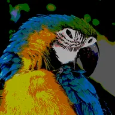

پوسٹرائز

ہر رنگ چینل کو چند فلیٹ اسٹیپس میں کاٹتا ہے، جس سے ہموار گریڈینٹس بینڈ بن جاتے ہیں۔ آفسیٹ بینڈ کناروں کی جگہ بدلتا ہے۔
سیٹنگز
| سیٹنگ | قسم | رینج | ڈیفالٹ |
|---|---|---|---|
| اسٹیپس | نمبر | 2 سے 255 تک | 10 |
| آفسیٹ | نمبر | -1 سے 1 تک | 0 |

ہر رنگ چینل کو چند فلیٹ اسٹیپس میں کاٹتا ہے، جس سے ہموار گریڈینٹس بینڈ بن جاتے ہیں۔ آفسیٹ بینڈ کناروں کی جگہ بدلتا ہے۔
| سیٹنگ | قسم | رینج | ڈیفالٹ |
|---|---|---|---|
| اسٹیپس | نمبر | 2 سے 255 تک | 10 |
| آفسیٹ | نمبر | -1 سے 1 تک | 0 |